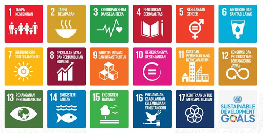
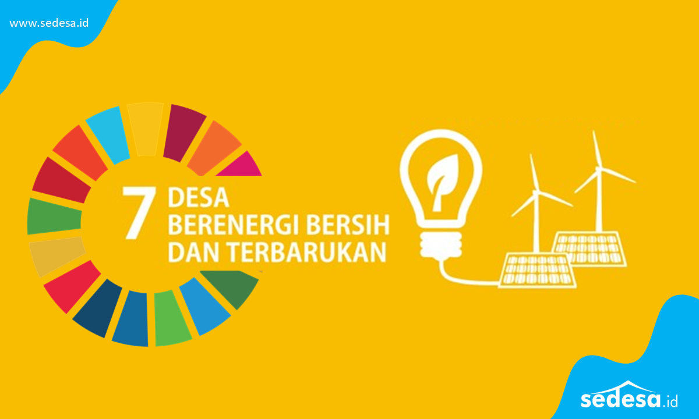

.png)


 
SDGs memiliki 17 tujuan dan yang saya akan bahas kali ini adalah tujuan no.7 “Energi bersih dan terjangkau”. SDGs 7 ini bertujuan untuk menjamin akses yang terjangkau, andal, berkelanjutan, dan modern untuk semua orang. SDGs ini memiliki 4 indikator utama yaitu :
1. Akses universal ke energi modern - 7.1.1 :
- Program 7.1.1 ini membantu upaya elektrifikasi di Indonesia dengan energi yang bersih sehingga dapat membantu wilayah - wilayah terpencil atau yang sekarang masih belum bisa terjangkau untuk mendapatkan akses listrik yang ramah lingkungan juga terjangkau.
- Pada tahun 2030, menjamin akses universal layanan energi yang terjangkau, andal dan modern.
2. Meningkatkan persentase global energi terbarukan - 7.2.1
- Hal ini memiliki tujuan untuk dapat mengukur kontribusi energi terbarukan seperti angin, tenaga surya, dan biomassa terhadap total konsumsi dari energi
- Pada tahun 2030, meningkat secara substansial pangsa energi terbarukan dalam bauran energi global.
3. Gandakan peningkatan efisiensi energi - 7.3.1
- Peningkatan efisiensi energi ini dilihat dari intensitas energi global (energi yang dibutuhkan untuk menghasilkan satu untik PDB)
- Pada tahun 2030, melakukan perbaikan efisiensi energi di tingkat global sebanyak dua kali lipat.
4. Memperluas dan meningkatkan layanan energi untuk negara berkembang - 7.B.1
- Pada tahun 2030, memperluas infrastruktur dan meningkatkan teknologi untuk penyediaan layanan energi modern dan berkelanjutan bagi semua negara-negara berkembang, khususnya negara kurang berkembang, negara berkembang pulau kecil dan negara berkembang.